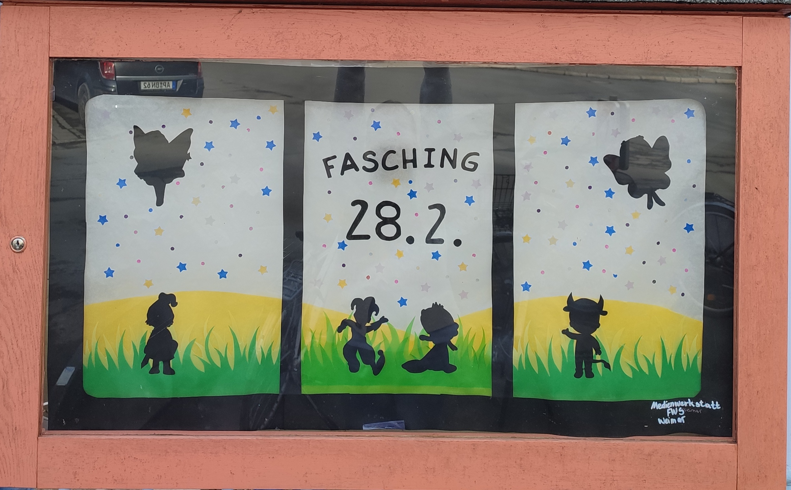
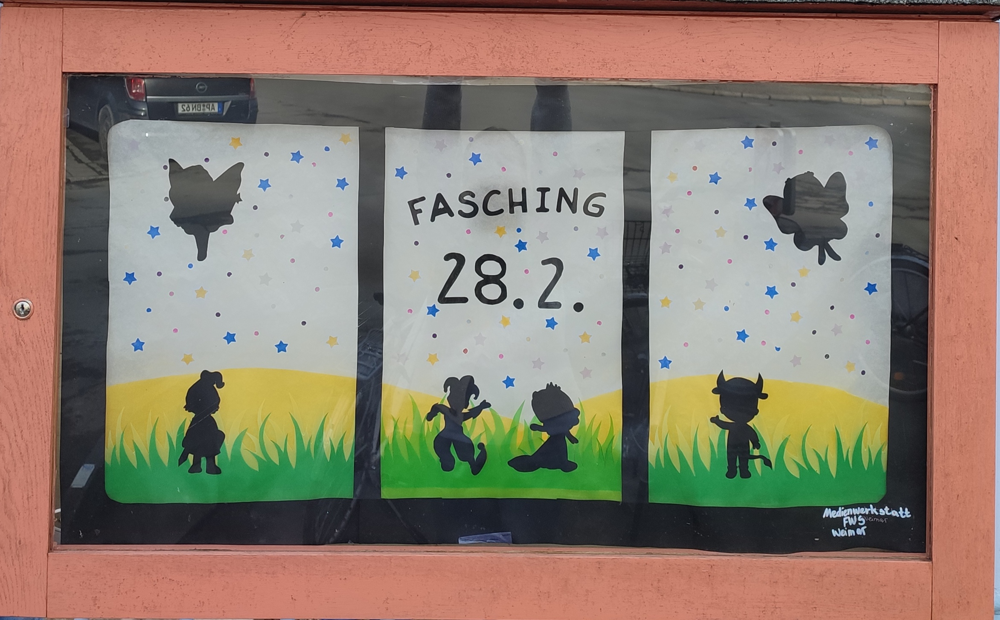

Der Schaukasten der Medienwerkstatt: Ein Fenster in das Schulleben
Konzept
Wir, die Medienwerkstatt, gestalten an der Freien Waldorfschle den Schaukasten der am Zaun des Altbaus hängt.
Dieser Schaukasten wird regelmäßig von uns gestaltet und spiegelt aktuelle Ereignisse, Projekte und Feierlichkeiten der Schule wieder.
Ob Einschulung,Frühlingsfest, Theatheraufführung oder Tag der offenen Tür, der Schaukasten wird stets neu und individuell gestaltet. Mit einer Lichterkette und Transparenten, lädt er Schüler, Eltern und Besucher ein, einen Blick in das lebendige Schulleben, der Waldorfschule, zu werfen.
Dies tun wir mit Freude und Tatendrang und wollen allen die an dem Schaukasten vorbei gehen ein Lächeln aufs Gesicht zaubern und zeigen wie viellfältig das Schulleben an der Freien Waldorfschule Weimar sein kann.
Umsetzung
 

Beteiligte
- Tim Gollub
- Helene
- Richard
- Mira
- Can